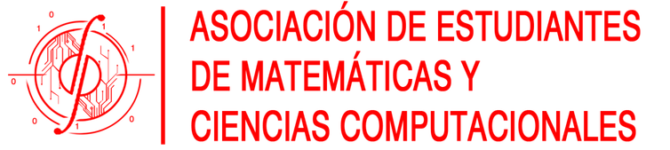
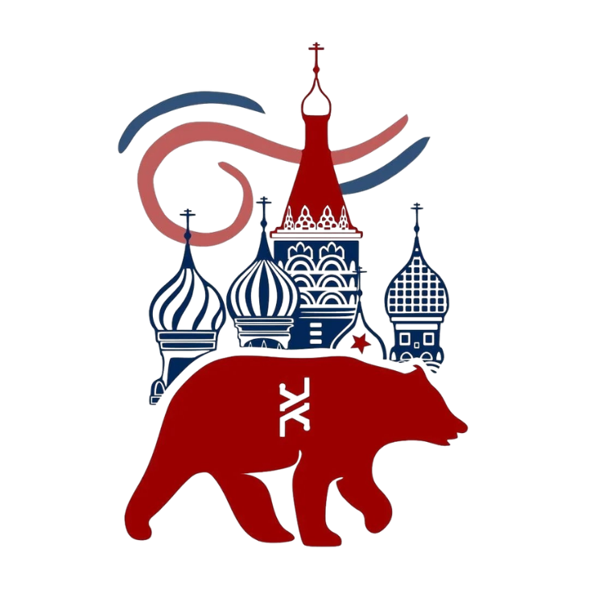

Student Clubs and Associations
Here are the leadership roles and experiences I have had in different student organizations at Yachay Tech University:
IEEE Computer Society Chapter at Yachay Tech University

Role: Web-master
Jan. 2026 – Present
- Leading the Marketing and Communication team at the Chapter.
- Produced advertising posters and promotional videos (recording and editing).
Computer Science Club at Yachay Tech University

Role: Web-master
Feb. 2025 – Dec. 2025
- Responsible for leading the Marketing and Communication team.
- Created advertising posters and promotional videos (recording and editing).
Mathematical and Computational Sciences Student Association (SA)

Role: Marketing
Feb. 2025 – Feb. 2026
- Assisted in creating posters and promotional videos for SA events.
- Worked as part of the Marketing and Communication committee.
Russian Club at Yachay Tech University

Role: President
Feb. 2025 – Dec. 2025
- Directed all committees of the club.
- Organized semester activity plans.
- Taught Russian language classes.
Journalism Club at Yachay Tech University
Role: Marketing
Nov. 2022 – Jul. 2023
- Assisted in creating promotional posters for club events.
- Worked as part of the Marketing and Communication committee.